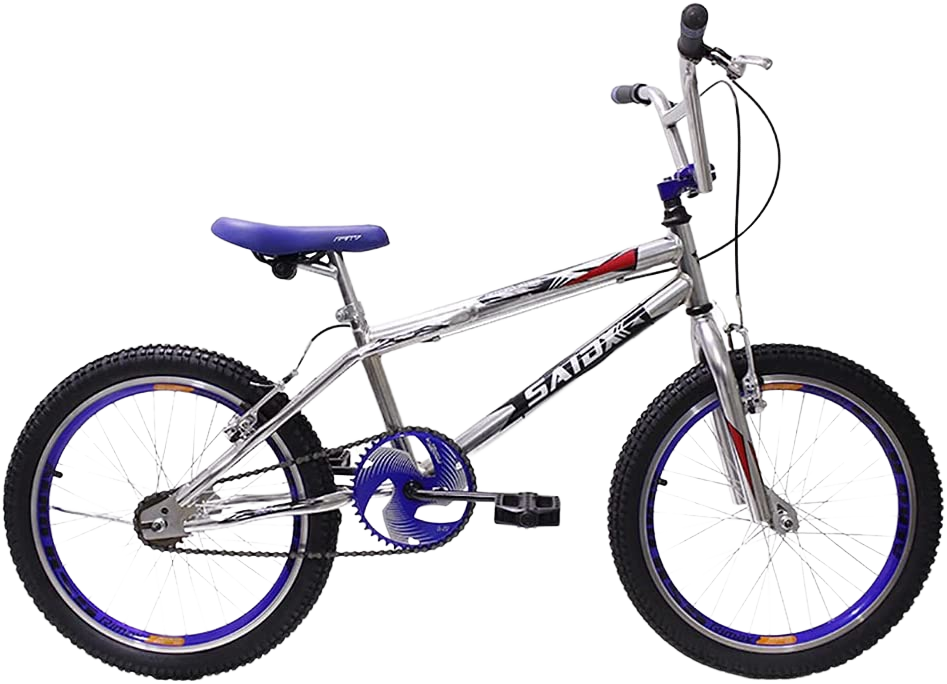

PRINCIPAIS MODELOS
Ao decidir competir no bicicross, não tem como fugir: é preciso investir em uma bicicleta BMX. Menor do que as bikes comuns e sem marchas, o modelo é composto por aro 20, pneus grossos e um guidão extremamente maleável. Tudo isso para melhorar a tração e absorção de impacto, o que é fundamental para terrenos irregulares e com curvas.
Entre as principais marcas de ciclismo, como Colli Bikes e Saidx, o que não falta são opções de bicicleta BMX para adquirir. Mas, como bem sabemos, esse modelo costuma ter um preço elevado - o que exige uma boa pesquisa antes da compra. Para te ajudar a investir sem medo, reunimos algumas sugestões da categoria. Aqui, é possível encontrar modelos da bicicleta BMX de boa qualidade pelo menor preço. Dá só uma espiada!
BMX Colli Bike
Quando se trata de bicicleta BMX, a Colli Bikes é uma das marcas que oferece o melhor custo-benefício. Além do valor mais acessível da categoria, o modelo também traz uma estrutura em aço carbono que permite mais durabilidade. Ela ainda conta com freios V-brake nos pneus traseiros para garantir mais segurança durante as manobras. A sua estrutura acompanha pedal de apoio, descanso lateral e pedal rosca com refletor. No entanto, vale destacar que o seu quadro é pequeno e, por isso, essa bicicleta BMX não é recomendada para usuários com mais de 1,70m de altura.
Características:
- Estrutura em aço carbono
- Freios V-brake nos pneus traseiros
- Possui 82 cm de altura, 61 cm de largura e 130 cm de profundidade
- Pode ser encontrada em diferentes cores, incluindo amarelo e branco
- Ideal para usuários com altura entre 1,60 e 1,70m
BMX Saidx
Se você busca uma bicicleta BMX para praticar freestyle, o modelo da Saidx é a nossa sugestão. Com pneus 20 multi-terreno, aro duplo e freios V-brake em nylon, ela promete mais segurança e absorção durante as manobras. Por outro lado, o guidão e canote do selim em aço permitem mais durabilidade a estrutura da bike. Outro diferencial são as coroas com 44 dentes que resultam em pedaladas mais leves. O quadro dessa bicicleta BMX é de tamanho 20", o que significa que ela deve ser utilizada por pessoas com altura entre 1,80 e 1,90m.
Características:
- É uma bicicleta BMX ideal para modalidade freestyle
- Possui freios V-brake
- Segundo algumas avaliações, o modelo oferece uma estrutura resistente e durável
- É feita para usuários com altura entre 1,80 e 1,90m
BMX Track & Bikes
Outra excelente opção de bicicleta BMX é a Noxx, da marca Track & Bikes. A sua estrutura acompanha aros Aero em alumínio reforçado e um guidão com mesa de alumínio. Isso significa que o modelo oferece não só segurança, como também conforto para a prática do esporte. Essa bicicleta BMX conta ainda com freios traseiros V-break com manetes de plástico e banco com ajustes de inclinação. No entanto, é importante lembrar que todos esses benefícios fazem com que o modelo não seja um dos mais baratos da categoria.
Características:
- Apresenta uma estrutura em alumínio reforçado
- Conta com freios traseiros V-break
- O seu banco possui níveis de ajustes
- Recomendado para usuários com altura entre 1,75 a 1,85m
BMX Ello Bike
A Energy Free Style, da marca Ello Bike, é a bicicleta BMX perfeita para quem está começando no esporte. O seu quadro, guidão e garfo são feitos de aço carbono, já a mesa é composta de alumínio resistente. Os pedais dessa bicicleta BMX são de nylon, o que permite mais leveza e conforto durante o uso. Além disso, o modelo acompanha descanso lateral e coroa com 44 dentes. Quanto ao design dessa bike, é possível optar por diferentes cores, sendo amarelo e preto as mais populares.

Características:
- Ideal para iniciantes no esporte
- A sua estrutura é feita de aço carbono e alumínio resistente
- Possui freios a disco mecânico
- Pode ser encontrado em diferentes cores, incluino amarelo e preto